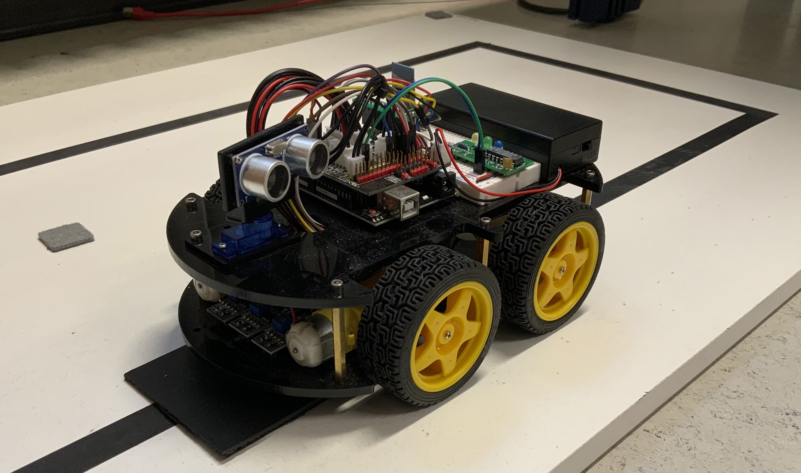

|
Roboter
|

Welcome to a brief introduction of a project executed by a student of the university of Kassel.
The goal of this project is to create reliable software that controlls the robot to drive three laps on a track (example track) consisting of a black line, autonomously.
There is a black square placed on the track which acts as the startfield.
The robot has three sensors which enable it to detect the black line aswell as the startfield so it can take action accordingly.
In addition to that the robot starts driving only after being placed on the startfield which initiates a 15s countdown.
Upon being moved the countdown shall be interrupted and the robot has to look for the startfield again.
The countdown has the robot blinking three leds with 5hz which are placed on top of the roboter.
When the robots completes 3 laps it stops and a 60s countdown starts, analog to the first countdown.
How to compile and install the firmware on the roboter:
In order to install new firmware on the robot. We first need to translate the sourcecode for the computer/ hardware to understand.
This is done by compiling the sourcecode into bytecode. Since the project consists of multiple sourcefiles these have to be linked together so the output is one object file.
The Transition Map.
to implement new states
The hole implementation is based on the api fsm.h which is a finite state machine.
This has several advantages. The robot knows at all times in which state it currently is in.
This allows for more accurate state transitions which results in better driving behaviour.
Each state can have its own logic and transitions which can be completly independant of each other.
This makes it incredibly easy to debug and implement new states.
When adding, a new state the logic of the allready existing transitions does not have to be modified because only the information relevant to the current state has to be interpreted.
The robot not only drives three rounds on a circular track, has two reliable and exact countdowns using different timer and prescaler to show the robot's (and coder's :) ) full potential, but also only uses timer instead of delays and has a working remote control!
To use the remote control, you first have to enable it with the compile option 'make remote'.
Open cutecom and create a bluetooth connection.
Then type a direction with the desired time in ms in the text box and send it.
The robot will follow your order as long as the time you sent is not expired or you have not send a new order. Here is a list of the directions available:
To tell you a little bit more about myself: My name is Klara M. Gutekunst, i am currently at the end of my second semester studying computer science at the university of Kassel.
This semester we had the chance to choose a project in a variety of hands-on coding training, including programming a robot. As I have never worked with code before I started studying,
I wanted to bring what I have learned so far to good use and actually see what some lines of code can do in real life. I have been not disappointed, as you can see:
The work really paid off and at the end my robot slowely but confidently moves around on the track!
If you wish to read more about the code and why certain code is used the way it is, just explore the option given above in the main page.
If you have any suggestions for improvement, do not hesitate and contact me: klara.gutekunst.kg@gmail.com
I hope you enjoy this project as much as I did
1.8.13